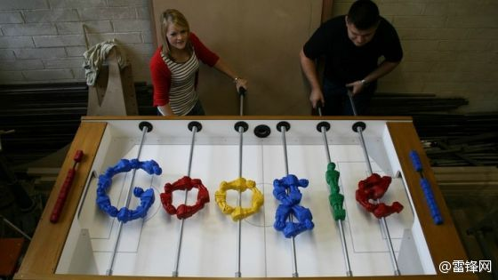

北京301医院总开这个药，不在医保范围，是医院自配的药，我还以为仅产自301，特点是难喝死了。每次都没法按医嘱喝完，所以不知疗效如何。//@艾玛_Y:这可是协和医院的神水---:抱歉，此微博已被作者删除。查看帮助： 网页链接
微博用来做绩效考核了？//@神棍敌人姐:不好意思，没机会了～作为资深工程师， 你的表现水准差不多是Zero。@温高铁:这次项目搬迁，是我来阿里后最长连续作战。过程很辛苦，表现很糟糕。付出了惨痛的代价而完成任务。从哪里跌倒就从哪里站起来，今年一定要把这个项目做好！
原来HR有三大终极问题没有答案：1,领导者是天生还是后天培养？2.工作效率是团队合作高还是单打独斗？3.员工能一直保持最佳状态吗？ 偶觉得是：1.后天培养 2.看情况 3.不能@雷锋网leiphone:#Googler的幸福#几年前，谷歌人力资源部门发现了个问题：公司大量妹子离职。作为一家科技公司，员工中男性占大多数，HR一直希望多招点儿妹子进来。更重要的是，硅谷的顶尖人才就那么多，你留不住人才，就会被苹果、Facebook等竞争对手抢走。因此：网页链接 @Abeunt 
运气从来没这么好过，大概是把以前几十年的运气都攒到今晚用了。先是中了一等奖5000元，咱也“高风亮节”一把，名额让出来又抽了别人。最后部门负责人上台争部门大奖9000元，咱又赢了。同事说，要是没有前面的让，可能后面的大奖也拿不上。
去年年会因为每个员工发了个小米手机，今年老早就有很多人期待。今年颇流行的一句话就是：“你想多了…”。晚会每人发了一个贴有iPhone5标的盒子，打开看，里面是块小蛋糕，当夜宵用的。@CSDN周兆成:刚刚发生的一幕：KFC送餐员工送完餐在等电梯时，讨论说：“他们公司待遇肯定不高”。。。。。。@CSDN双鱼-HR @李鸿阔 @CSDN